A focused leadership group across mechanical, electrical, and sustainability, supported by a national bench of more than 475 engineers and staff.
Senior decision-makers who would carry a collaborative-delivery pursuit and remain accountable through delivery. The Vancouver office is one of three peer offices in MCW VEC (Vancouver, Edmonton, Calgary) supporting Western Canada pursuits.

Collin joined MCW as a Principal in 2021 and became a Partner in 2022. He brings more than 25 years of mechanical engineering experience across Canada, the United States, and internationally — with depth in healthcare, laboratory, post-secondary and K-12 education, civic, institutional, and military projects. Single point of contact and Engineer of Record on major civic pursuits, including the Burnaby RCMP Detachment IPD.

Graham joined MCW in 2009, became Associate in 2016, and Partner in 2018. His specialty is electrical energy systems, with strengths in project management, communications design, and systems troubleshooting. IPD experience includes the Township of Langley Fire Hall No. 5 and Training Centre, and the Kamloops Centre for the Arts — leading electrical scope within integrated project teams. Honoured with the 2018 ACEC-BC and ACEC (national) Young Professional Awards. Chairs the ACEC-BC Building Engineering Steering Committee and leads major decarbonisation pursuits including Robson Square.

Rob joined MCW in 2011 and brings deep mechanical, plumbing, and fire protection experience across institutional, healthcare, residential, and commercial projects. Gold Seal Certified through the Canadian Construction Association and active in ASHRAE, ASPE, and SFPE technical communities. Specialties include Passive House design and complex mixed-use developments.

Sara joined MCW in 2023 as an electrical project manager and Principal in the Vancouver office. She leads electrical design and delivery on commercial, civic, institutional, and educational pursuits, with a focus on disciplined coordination across multidisciplinary teams.

Michael joined MCW in 2023 as a Principal in the Sustainability Department, bringing 20 years of experience in sustainable building consulting and building enhancements. His expertise covers LEED and Living Building certification, energy modelling reviews, measurement and verification, and policy. Works closely with MCW's Western offices on healthcare, post-secondary, civic, and transit pursuits.
The day-to-day project leaders who carry collaborative design and coordination through delivery.

Melissa leads mechanical design and contract administration on a wide range of commercial, institutional, and recreational projects. Applied Science Technologist with LEED AP credentials, she brings rigorous documentation discipline and field-tested constructability judgement to MCW's project teams.

Matt joined MCW in 2021 as an engineering project manager. He leads mechanical design delivery on commercial, civic, and institutional projects, with strengths in client engagement, multidisciplinary coordination, and pragmatic problem-solving across project phases.
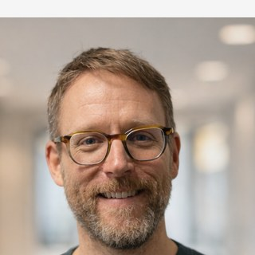
Josh joined MCW in 2016, bringing nine years of electrical engineering experience prior to joining the firm. His specialties span electrical engineering, lighting design and controls, power distribution, PV panels, and EV charging infrastructure across commercial and institutional projects.
The engineering team in the Vancouver office who carry projects through design, coordination, and construction administration.
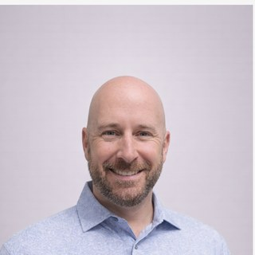
Sean is a dynamic and results-driven Engineering Project Manager with over 12 years of experience in systems design and specification for mechanical and electrical building services. He combines hands-on technical expertise as a Red Seal Electrician with a strong track record in project management, team leadership, and client relationship management across HVAC, medical gas, and fire-suppression systems.
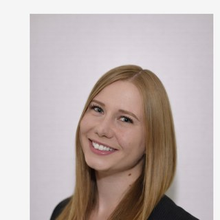
Lucy joined MCW as a Mechanical Project Manager with five years of HVAC and plumbing design experience in British Columbia and two years managing reconstruction and humanitarian projects in Ukraine and Poland. She delivers complex, multi-disciplinary projects across education, residential, and humanitarian sectors, with strengths in Net Zero design, geothermal, heat pumps, and building automation.
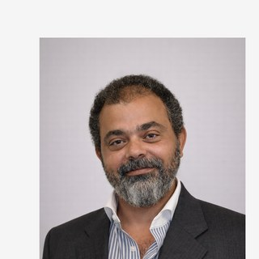
Hussam is MCW's Fire Protection Project Manager with over 28 years of experience in fire protection engineering, project management, and life-safety system design. Dual-licensed P.Eng. in British Columbia and Ontario, he leads fire protection scope on commercial, institutional, and civic pursuits.
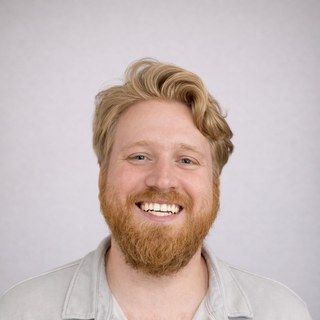
Blake is MCW's BIM Manager in the Vancouver office. His experience on multi-discipline, large-scale projects makes him ideal for collaboration and coordination. He brings insight to best practices and a willingness to continue to learn advancing technology, helping MCW design better buildings for clients.
Evan joined MCW in 2018 with mechanical design and HVAC installation experience on mixed-use projects. He leads project management on mechanical scope, with focus on ventilation, heating and cooling systems, and HVAC coordination across commercial and institutional sectors.
Jonathan joined MCW in 2011 as a mechanical engineer, initially as an energy modeller for LEED and non-LEED projects. He later transitioned into mechanical HVAC, plumbing, and fire protection design across residential and commercial projects. His combined energy modelling and design experience gives him a holistic perspective on building performance.
Kaan joined MCW in May 2022 as an electrical engineer specializing in electrical design, solar PV system design, and electrical distribution. Project work includes the Kamloops Centre for the Arts and other major Western Canadian collaborative-delivery pursuits.
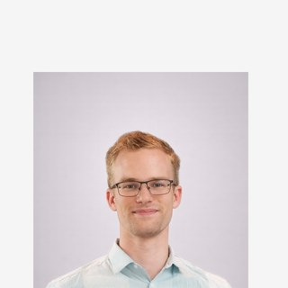
Scott joined MCW in 2016 as a co-op student and rejoined as a Project Engineer. He specializes in electrical design, project documentation, airport projects, electrical distribution, communications systems, and fire alarm infrastructure.
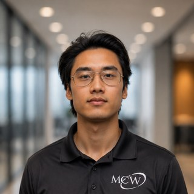
Huy joined MCW's Vancouver office in March 2023, bringing mechanical engineering expertise across HVAC design, plumbing, two-pipe heat pump systems, and dedicated outdoor air systems. His work supports MCW's commercial and institutional design portfolio.
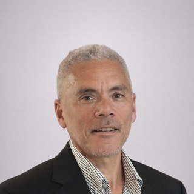
Rick joined MCW in 2014 with over 30 years of electrical design industry experience across commercial, institutional, and specialty projects. As a senior electrical designer, his expertise spans lighting design, lighting controls, lighting simulations, UPS distribution, emergency power systems, and fire alarm systems.
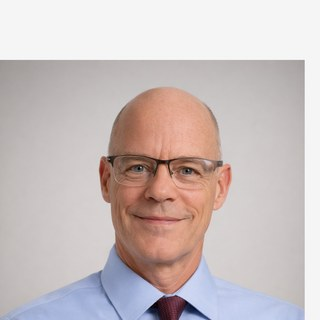
Alan joined MCW in October 2022 as a Senior Electrical Designer with extensive industry training in HVAC thermodynamics and psychometrics, HVAC controls, and AC Tech Variable Frequency Drive systems. He brings broad cross-discipline depth to MCW's electrical design teams.
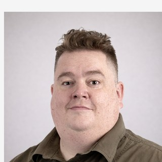
With over 25 years of experience in mechanical design and engineering technology, Benjamin specializes in recreation facility design including pool filtration and treatment, ice rink refrigeration, and aquatic systems. His sector depth makes him a key resource on civic recreation pursuits.
Laura joined MCW in 2023 as the Vancouver office's RCDD-certified Communications Distribution Designer, specializing in structured cabling design (Cat 6A, 7A, Fiber), security systems design, and integrated communications infrastructure across commercial and institutional projects.
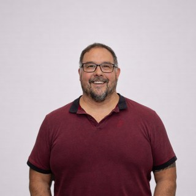
Lloyd joined MCW in 2015 as an electrical reviewer, bringing Journeyman Electrician expertise to field reviews and site construction. His scope covers electrical distribution, lighting and controls, fire alarm systems, and quality assurance for construction-phase work.
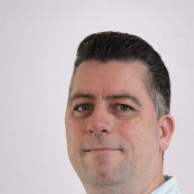
Steve has been involved in mechanical and drafting fields with deep expertise in plumbing design, high-rise plumbing systems, HVAC integration, and storm water management. His specialty support strengthens MCW's mid- and high-rise residential and mixed-use portfolio.
MCW's Vancouver office leads BC pursuits and draws on a national network that includes some of Canada's earliest IPD school delivery teams. When a pursuit calls for specialist depth — Passive House, complex healthcare, advanced laboratories, or Indigenous-led project structures — we staff it from across our offices in Toronto, Calgary, Edmonton, Winnipeg, Ottawa, and the Maritimes.
The Vancouver office maintains 64 staff with 1,496+ documented projects in our portfolio, supplemented by full-firm capacity as required.